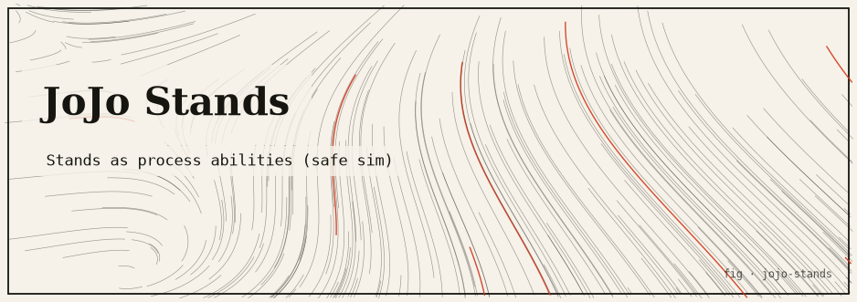

Rust
jojo-stands
A tick-based OS-scheduler simulation whose in-memory processes are granted JoJo Stand abilities — time-stop, power amplification, precognition — as real scheduler policy modifiers.

The idea
JoJo Stand abilities map surprisingly well onto scheduler concepts: The World (time-stop) is priority preemption that freezes all other tasks; Star Platinum (precision) is deterministic FIFO scheduling; Crazy Diamond (restoration) is checkpoint/rollback; Gold Experience (life) is process spawning. Each Stand ability is implemented as a scheduling policy modifier that affects how the tick-based simulator allocates CPU time.
How it works
- Processes are in-memory structs with a priority, a Stand ability, and a work queue.
- Each tick the scheduler evaluates Stand modifiers before choosing the next process.
- Time-stop (The World): the Stand user runs uninterrupted for N ticks regardless of other priorities.
- Precision (Star Platinum): process always runs in strict FIFO order within its priority band, never yielding early.
- Restoration (Crazy Diamond): scheduler can roll back any process to a previous in-memory state (checkpointing).
- All processes are in-memory; no real OS processes are spawned or affected.
Run it
git clone https://github.com/caelum0x/awesome-mad-projects.git cd jojo-stands cargo test cargo run # Tick 1: [The World] time-stop active — process DIO runs 5 ticks uninterrupted # Tick 6: time-stop expired — normal scheduling resumes # Tick 7: [Star Platinum] FIFO precision — Jotaro runs to completion